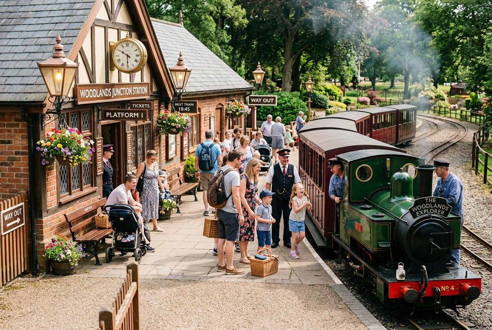

00 Min Departure
Mile 0.0 • Station Concourse
Central Victorian Platform
All journeys commence at our faithfully preserved 1920s terminal. Hear the authentic brass station bell, watch coal fueling, and board your carriages safely.